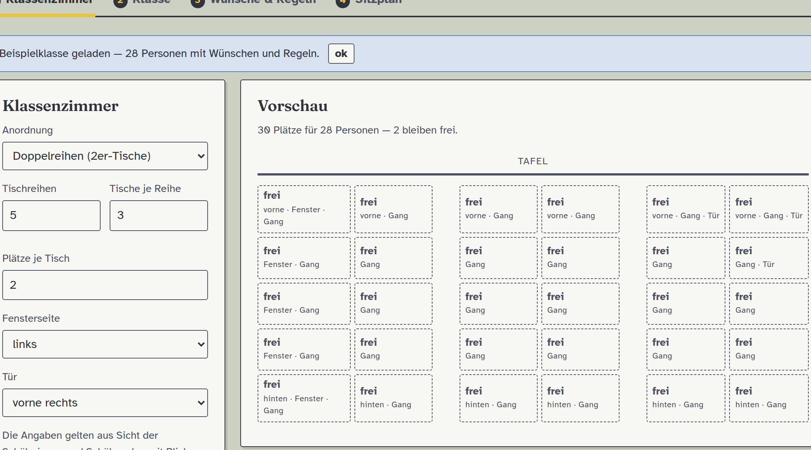
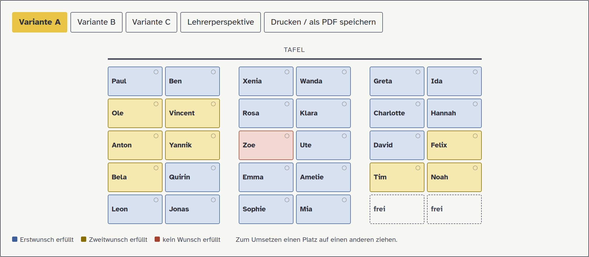
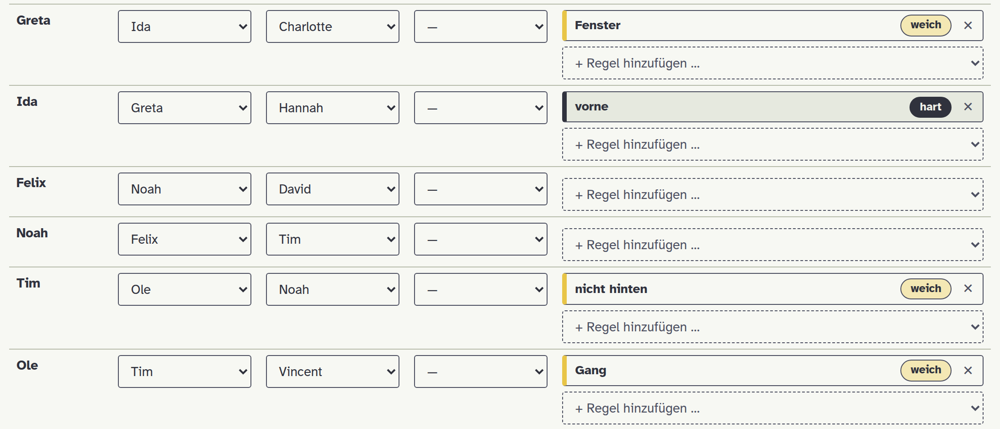

Kurzanleitung für Lehrkräfte · Sitzpläne aus Wünschen und Regeln – in Minuten, ohne Anmeldung
Der Sitzplan-Generator erstellt aus den Sitznachbar-Wünschen Ihrer Klasse einen fairen Sitzplan. Er berücksichtigt Wünsche und pädagogische Vorgaben (z. B. „vorne“, „nicht am Fenster“, „nicht neben …“) und zeigt Ihnen drei Varianten zur Auswahl.


Das Verfahren belohnt gegenseitige Wünsche, wertet den zweiten Wunsch desselben Kindes geringer und bestraft Pläne, in denen ein Kind leer ausgeht. So sitzen echte Freundespaare zusammen – ohne dass beliebte Kinder alles bekommen. Die Gewichtung lässt sich im Schritt „Sitzplan“ anpassen.
Regeln werden je Kind über das Menü „+ Regel hinzufügen …“ ausgewählt. Das Menü ist nach Themen gegliedert. Jede Regel ist entweder weich (ein Wunsch, den der Algorithmus nach Möglichkeit erfüllt) oder hart (wird nie verletzt – gedacht für Attest, Sehschwäche oder Nachteilsausgleich). Ein Klick auf „weich“ bzw. „hart“ schaltet um.
| Regel | Wirkung |
|---|---|
| Lage im Raum | |
| vorne | erste Tischreihe |
| nicht hinten | nicht in der letzten Reihe |
| hinten | letzte Tischreihe |
| höchstens bis Reihe … | nicht weiter hinten |
| ab Reihe … | nicht weiter vorne |
| linke / rechte Hälfte | aus Sicht der Schüler |
| Raummitte | mittlere Plätze |
| Platzeigenschaften | |
| Fenster / nicht Fenster | Licht, Blendung, Zugluft |
| Gang / nicht Gang | Hilfsmittel, Ruhe |
| nahe Tür / nicht Tür | Unruhe, Fluchtweg |
| Beziehung zu Kind … | Wirkung |
|---|---|
| nicht neben | kein direkter Nachbar |
| nicht selber Tisch | anderer Tisch / andere Gruppe |
| direkt neben | Lernpartner, Buddy |
| selber Tisch | gleiche Gruppe |
Widersprechen sich harte Regeln oder fehlen Plätze, meldet die Vorabprüfung im Klartext mit Namen, woran es liegt. Weiche Regeln und Wünsche werden gegeneinander abgewogen.
